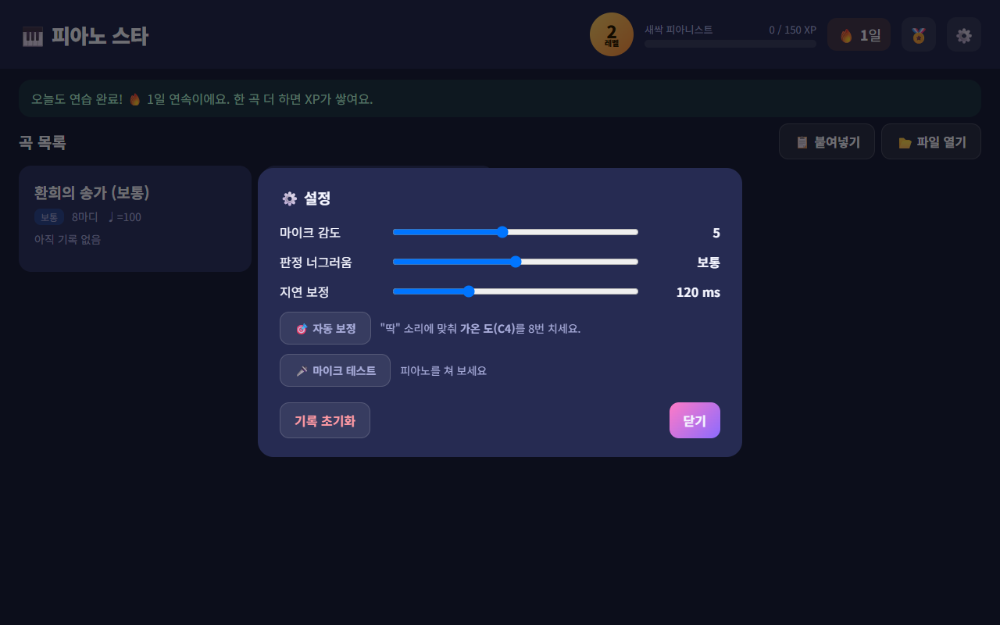
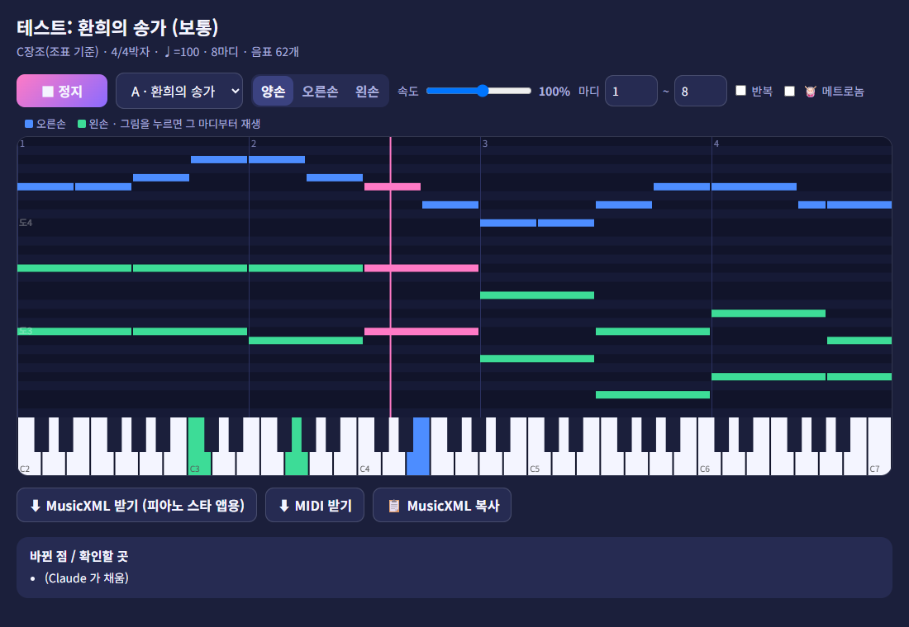
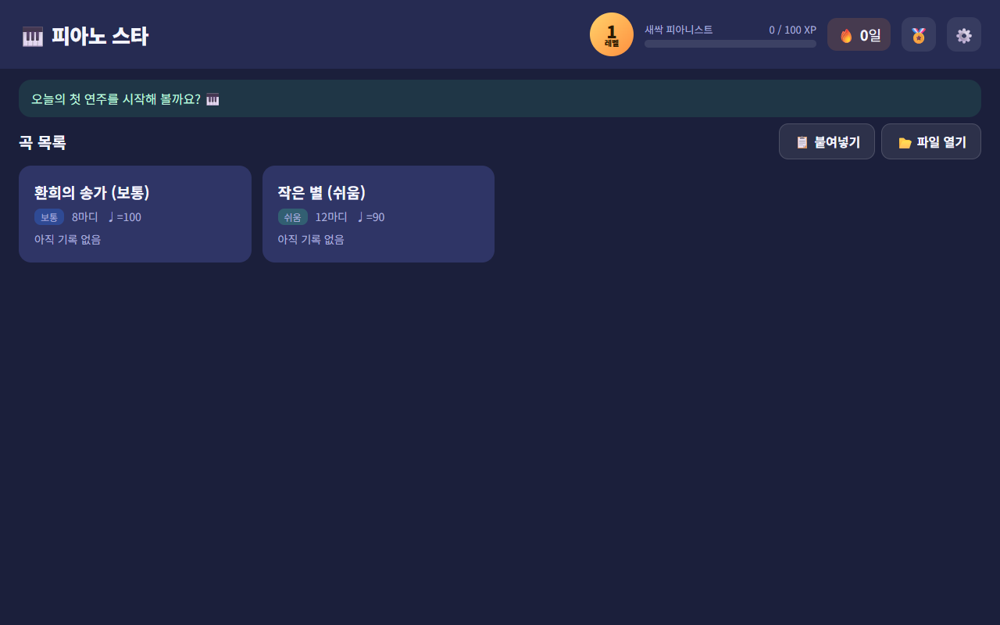
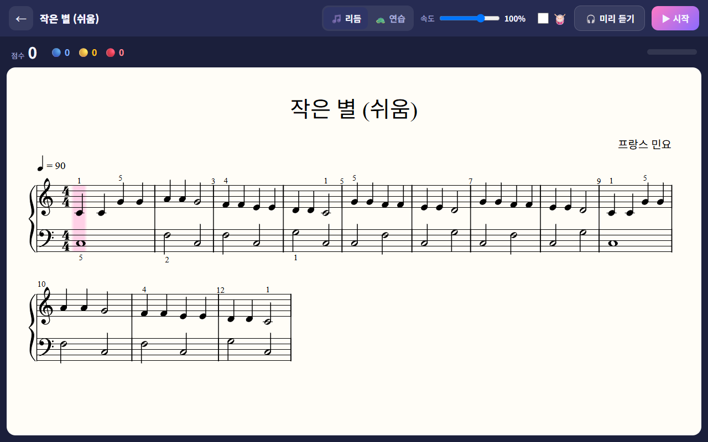
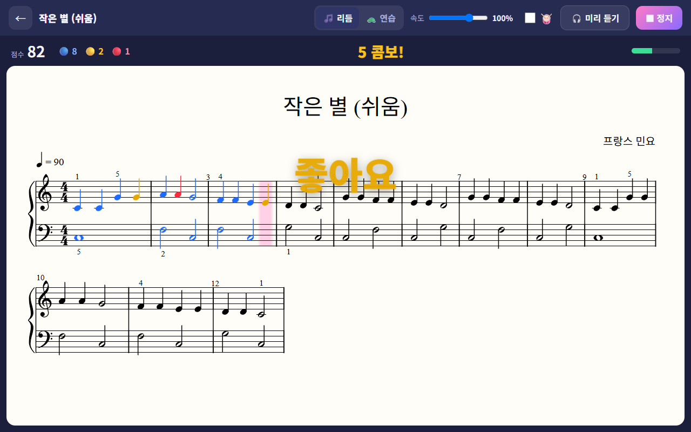
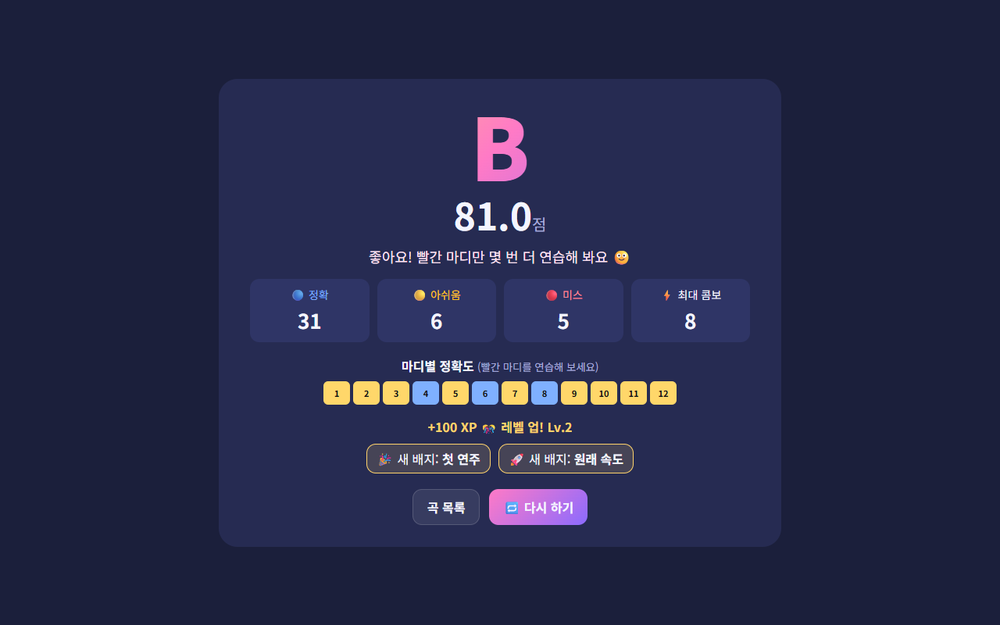

① 처음 한 번 5분
태블릿을 피아노 보면대에 가로로 세워 두고 시작해요.
크롬으로 앱 주소 열기
태블릿에서 크롬을 열고 주소창에 입력해요 (또는 아래를 눌러요).
icarus-ms.github.io/piano-star홈 화면에 추가하기
- 크롬 오른쪽 위 ⋮ 누르기
- 홈 화면에 추가 (또는 앱 설치) 누르기
- 추가 → 홈 화면에 🎹 피아노 스타 아이콘이 생겨요
마이크 허용하기
- 아무 곡이나 눌러서 열고 ▶ 시작 누르기
- 마이크 허용 창이 뜨면 → 허용 (가능하면 "사이트 방문 시 허용")
- 안드로이드가 크롬 마이크 권한을 한 번 더 물으면 → 앱 사용 중에만 허용
- ■ 정지 누르고 ← 로 홈 화면으로
마이크 테스트 🎤
- 홈 화면 오른쪽 위 ⚙️ → 🎤 마이크 테스트
- 피아노로 도·미·솔을 하나씩 쳐 봐요
- "들린 음: 도4" 처럼 맞게 나오면 성공!

자동 보정 🎯 (박자 판정 맞추기)
- 같은 설정 화면에서 🎯 자동 보정
- "딱, 딱" 두 번 들린 다음부터
- "딱" 소리에 맞춰 가온 도(C4)를 8번 쳐요
- "보정 완료: ○○ ms" 가 나오면 끝 → 닫기
Claude 앱 확인하기
- 태블릿에 Claude 앱을 열고 아빠 계정으로 로그인
- 왼쪽 메뉴 프로젝트 → 🎹 피아노 악보 도우미 가 보이면 준비 끝!
② 새 곡 넣기 치고 싶은 곡이 생길 때
악보 사진 찍기 📸
- 악보를 평평하게 펴고, 위에서 똑바로 찍어요
- 그림자 없이 밝은 곳에서, 한 장에 한 페이지씩
- PDF 악보가 있으면 사진 대신 PDF 를 써도 돼요
Claude 프로젝트에서 새 채팅
- Claude 앱 → 프로젝트 → 🎹 피아노 악보 도우미
- 프로젝트 안에서 새 채팅 시작 (꼭 프로젝트 안에서! 그래야 플레이어가 나와요)
- 📎 또는 + 로 악보 사진·PDF 첨부 (여러 장 OK)
- 이렇게 보내요:
악보 플레이어로 들어보기 🎧
잠시 기다리면 채팅에 악보 플레이어가 나와요. (안 보이면 채팅 안의 플레이어 카드를 눌러 열어요)
- ▶ 재생 — 피아노 소리로 들려줘요
- 양손 오른손 왼손 — 한 손씩 따로 듣기
- 속도 — 느리게 들어보기
- 마디 ○ ~ ○ + 반복 — 어려운 부분만 계속 듣기
- 그림(막대)을 누르면 그 마디부터 재생, 아래 건반에 누르는 음이 표시돼요

파랑 = 오른손, 초록 = 왼손, 분홍 = 지금 나는 소리
마음에 들 때까지 바꿔 달라고 하기
들어보고 말로 부탁하면 돼요. 몇 번이든 괜찮아요!
피아노 스타에 넣기
방법 A — 복사 & 붙여넣기 (추천)
- 플레이어에서 원하는 버전을 고르고 📋 MusicXML 복사
- 홈 화면에서 🎹 피아노 스타 열기 → 📋 붙여넣기
- 칸에 자동으로 채워져요 (비어 있으면 칸을 길게 눌러 붙여넣기)
- 곡 추가 → 곡 목록에 새 곡이 생겨요! 🎉
방법 B — 파일로
- 플레이어에서 ⬇ MusicXML 받기
- 피아노 스타 → 📂 파일 열기 → 다운로드 폴더에서 파일 선택
③ 연주하기 🎹
곡 고르기
피아노 스타 홈 화면에서 곡 카드를 눌러요. 카드에 최고 등급·점수와 점수 그래프가 보여요.

처음 보는 곡은 이 순서로
- 🎧 미리 듣기 — 어떤 곡인지 들어보기
- 🐢 연습 모드 — 맞는 음을 칠 때까지 기다려줘요. 틀리면 무슨 음이 들렸는지 알려줘요
- 🎵 리듬 모드 + 속도 70% — 박자에 맞춰서
- 잘 되면 80% → 90% → 100% 도전!

▶ 시작 → 카운트다운 → 연주!
"딱·딱·딱·딱" 세어 준 다음, 분홍색 커서가 있는 음부터 쳐요. 치는 대로 음표 색이 바뀌어요.
- 파랑 · 완벽! — 음도 박자도 딱
- 노랑 · 좋아요 — 조금 늦거나 빠름, 화음 일부만
- 빨강 · 미스 — 틀리거나 놓침

결과 보고 다시 도전
- 등급 S(95점↑) · A(85↑) · B(70↑) · C(50↑) · D
- 마디별 정확도 — 빨간·노란 마디만 🐢 연습 모드로 몇 번 더!
- 경험치로 레벨업, 조건을 채우면 🏅 배지, 매일 치면 🔥 연속 기록

❓ 이럴 땐
다 맞게 쳤는데 노란색이 많아요
⚙️ → 🎯 자동 보정을 다시 해 주세요. 그래도 그러면 판정 너그러움을 한 칸 올려요.
음을 쳤는데 반응이 없어요 / 빨간색만 나와요
- ⚙️ → 🎤 마이크 테스트로 음이 잡히는지 확인
- 마이크 감도 올리기, 피아노 볼륨 조금 키우기
- 태블릿을 피아노 스피커 가까이(보면대) 두기
- 마이크 권한: 크롬 ⋮ → 설정 → 사이트 설정 → 마이크 → 허용
화음이 자꾸 노란색이에요
마이크로는 4음 이상 화음을 다 구별하기 어려워요. 판정 너그러움을 '너그러움'으로 바꾸거나, Claude 에게 "왼손 화음을 2음으로 줄여줘"라고 부탁해요.
Claude 가 플레이어 대신 긴 코드만 보여줘요
프로젝트 안에서 새 채팅을 열었는지 확인해요. 그래도 안 되면 "악보 플레이어로 보여줘"라고 한 번 더 말해요.
⬇ 받기가 안 돼요 / 붙여넣기 칸이 비어 있어요
받기가 안 되면 📋 복사를 써요. 붙여넣기 칸이 비어 있으면 칸을 길게 눌러 → 붙여넣기.
앱 화면이 예전 그대로예요 (업데이트가 안 보여요)
앱을 완전히 닫았다가(최근 앱 목록에서 위로 밀기) 다시 열어요. 한 번 늦게 반영될 수 있어요.
점수 기록이 사라졌어요
기록은 태블릿 크롬에 저장돼요. 크롬의 인터넷 사용 기록 / 사이트 데이터 삭제를 하면 지워지니 조심해요.